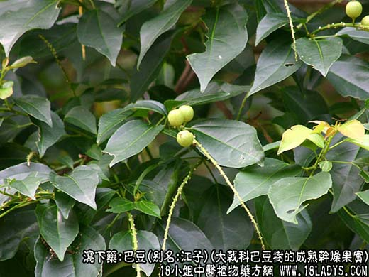
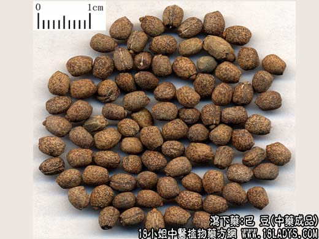
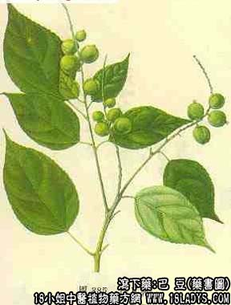

本品为较常用中药。始载于《神农本草经》列为下品。
别名：江子，肥鼠子。
来源：本品为大戟科常绿乔木巴豆树的成熟干燥果实。野生或栽培。
产地：主产于四川宜宾、长宁、兴文、万县、合川等地，福建、广西、云南、贵州等省亦有产。
形状鉴别：蒴果呈卵圆形或钝角三棱形。长约2厘米，直径约1.5厘米，果壳淡黄绿色或灰黄色，微粗糙，有6～8条纵像线形沟纹。外壳坚脆，常从沟纹处开裂，三瓣或四瓣，每瓣内有种子一枚（种子习称巴米）。种子呈略扁椭圆形，形似蓖麻子，而少花纹，种皮棕黄色，一端有种脐种阜，另一端有合点，两者之间有一条隆起的种脊。种皮薄而坚脆，剖开种皮可见黄白色种仁，胚乳两片肥厚富油性。中央有菲薄子叶两片。气无味辛辣。有大毒。以颗粒饱满，种仁色白，不泛油者为佳。
主要成分：含脂肪油、蛋白质。蛋白质中含巴豆素等。
功效与作用：泻下。有较强促进肠的蠕动。
炮制：多制霜用。
性味：辛辣，热。
归经：胃、大肠经。
功能：峻下寒积，逐水消肿。
主治：胃肠寒积停滞，脘腹胀痛，痰多水肿等症。外用治恶疮疥癣。
注：巴豆有大毒，多去油制霜用，名巴豆霜。其制法有三：1、取巴豆仁碾轧成细泥状，用能吸油的纸多层包裹，放铁板上，底下加热，使油受热扩散渗透干纸上，反复换纸数次至油质大部分消失，所余之渣碾细过罗，即成巴豆霜。
2、北京制法，压缩去油，至含油率15%作用、碾细过罗即成。
3、天津制法，先测定巴豆仁含油量，加入适量淀粉，同轧，使其含油率为25%。
禁忌：本品有毒，凡非寒实急症，不可轻用。孕妇及虚弱患者均禁用。本品畏牵牛子。
用量：0.15～0.45g。